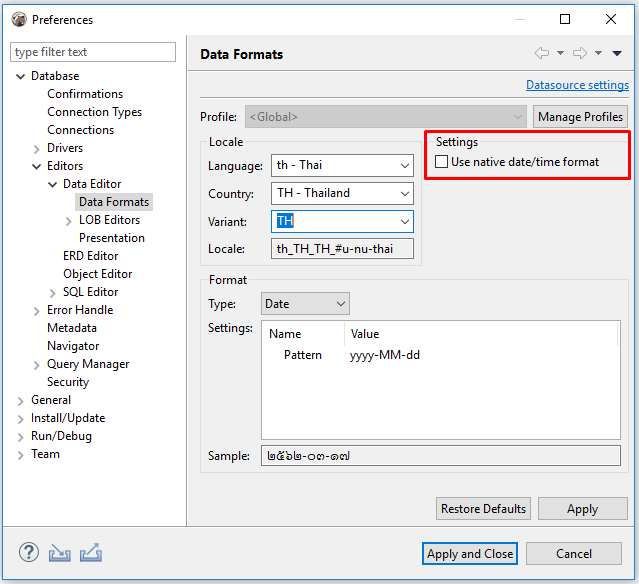

The DBeaver formatting functions allow you to set up database locale and change datasource format settings. This feature can be very useful on database migration, for example.
To change data format settings use option Window -> Preferences in main menu.
In the Preferences dialog box go to Database -> Editors -> DataEditor -> Data Formats.
Or, in the Database Navigator right-click a connection and select Edit Connection menu option.
In the right area of the opened Data formatting preferences dialog window go to Result Sets -> Data Formatting and select the Datasource settings check box in the left area to customize the data format settings.
Data Format Profiles
Data format profiles allow you to apply a set of data format preferences to the whole current project by one click.
To create a data format profile press the Manage Profiles button. In the opened dialog window press button New Profile, define the name and press Create.
To delete a data format profile press the Manage Profiles button, then in the opened dialog window select the profile you want to delete and press the button Delete Profile.

Changing Data Formats
The following groups of data format settings can be adjusted:
Locale
To define this setting select a language, country and variant if available.
Native Date/Time Mode

Select Use native date/time format check-box and the data format originally built-in to the datasource will be used.
You can change the format of the following data types:
Data Type Format
The format of the following data types can be customized:
- Date
- Time
- Timestamp
- Numbers
Date
The default value for this data type is yyyy-MM-dd.
Time
The default value for this data type is HH:mm:ss
Timestamp
The default value for this data type is yyyy-MM-dd HH:mm:ss
Numbers
The following parameters can be configured from thisy type of data:
-
Use Grouping - Long numbers can be hard to read if they have too many digits. For example, the factorial of 30 is 33 digits long! Select this check-box to enable Grouping mode, in which digits are displayed in clumps of 3 or 4 (depending on the current radix) separated by commas.
-
Maximum integer digits - Defines the maximum number of digits to the left of the decimal point.
-
Minimum integer digits - Defines the minimum number of digits to the left of the decimal point.
-
Maximum fraction digits - Defines the maximum number of digits to the right of the decimal point.
-
Minimum fraction digits - Defines the minimum number of digits to the right of the decimal point.
-
Use data type scale for fraction digits - Some numeric columns or parameters may have a predefined scale, that is the maximum number of digits to the right of the decimal point. Select this check-box if you want the predefined precision to be used.
-
Rounding mode - Specifies a rounding behavior for numerical operations capable of discarding precision. Each rounding mode indicates how the least significant returned digit of a rounded result is to be calculated. To learn more, please refer to Oracle documentation.
To change the data type format, change the value displayed in the Pattern area,save the changes made by pressing the Apply button and observe the expected result in the Sample field.
Restoring Default Data Formats
To restore the default data format settings, press the Restore Defaults button.
Datasource Settings
Press Datasource settings link to change data format settings for a particular datasource, then adjust the settings in the opened dialog box.
To save changes made press Apply.